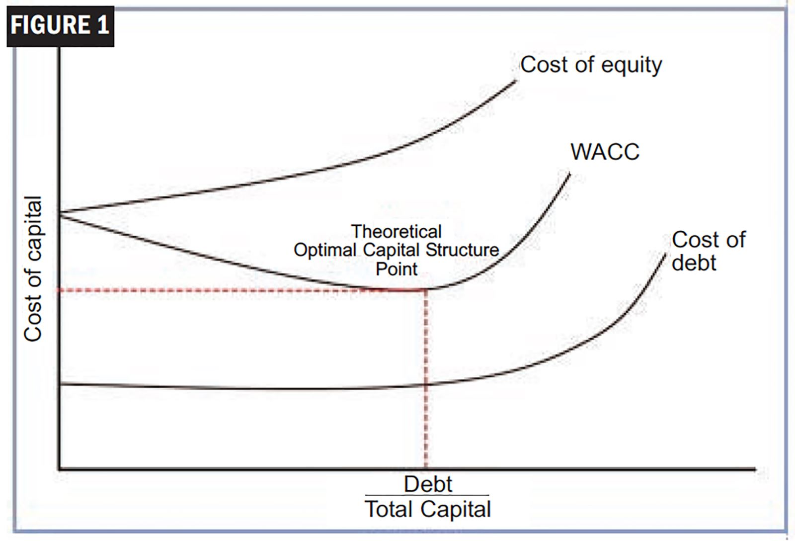

Weighted Average Cost of Capital (WACC)
Learn how companies calculate their overall cost of financing and use it as a critical benchmark to evaluate new investments, projects, and corporate valuations.

The Weighted Average Cost of Capital (WACC) is the average rate a company expects to pay to finance its assets. It represents the blended cost of all the company's capital sources, including common stock, preferred stock, and debt.
WACC is one of the most important metrics in corporate finance because it serves as the "hurdle rate" for new projects and the discount rate for valuing entire companies.
What is WACC?
Since companies are typically funded by a mix of debt (loans, bonds) and equity (shareholders), each source of capital has a different cost. WACC calculates the proportional cost of each, giving you a single, comprehensive interest rate for the whole business.
Where:
• E = Market value of equity
• D = Market value of debt
• V = Total value of capital (E + D)
• Re = Cost of equity
• Rd = Cost of debt (pre-tax)
• T = Corporate tax rate
The Components of WACC
Cost of Equity (Re): The return shareholders expect for taking on the risk of owning the company's stock. It is typically calculated using the Capital Asset Pricing Model (CAPM).
Cost of Debt (Rd): The interest rate the company pays on its borrowed funds. Notice in the formula that it is multiplied by (1 - T). This is because interest payments are tax-deductible, which lowers the effective cost of borrowing (the "interest tax shield" we covered in Submodule 2.3).
Real-World Corporate Finance Example
Suppose Company X has a total market value of $10 million, consisting of $6 million in equity and $4 million in debt.
The shareholders expect a 10% return (Cost of Equity). The company pays 5% interest on its debt (Pre-tax Cost of Debt), and the corporate tax rate is 25%.
Step 1: Calculate the weights. Equity Weight = 60% ($6M / $10M). Debt Weight = 40% ($4M / $10M).
Step 2: Calculate the after-tax cost of debt. 5% × (1 - 0.25) = 3.75%.
Step 3: Calculate WACC. (0.60 × 10%) + (0.40 × 3.75%) = 6% + 1.5% = 7.5%.
How Corporate Finance Uses WACC Every Day
Capital Budgeting & NPV: WACC is the primary discount rate used in Net Present Value (NPV) calculations. If a project's expected return (IRR) is higher than the WACC, it is approved.
Corporate Valuation (DCF): When investment bankers value a company using a Discounted Cash Flow model, they use WACC to discount the company's future Free Cash Flows back to their present value.
Performance Evaluation: Management uses WACC to calculate Economic Value Added (EVA), ensuring that the company's operating profits are actually exceeding the cost of the capital used to generate them.
📝 Practice Quiz & Submodule Check
Complete all questions to unlock Submodule 2.5Answer the multiple-choice questions below. Scoring a perfect score will automatically mark this submodule as completed!